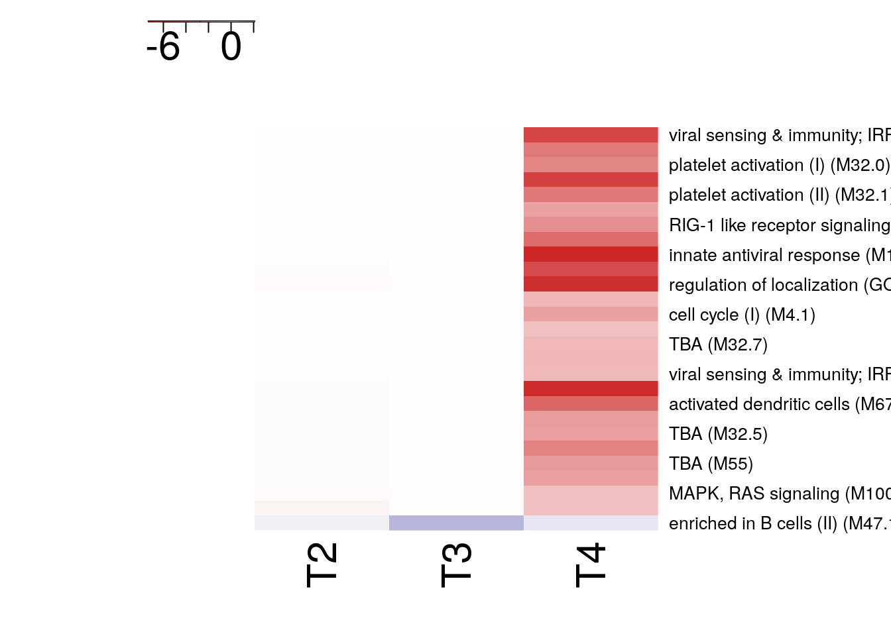

Last updated: 2019-04-30
Checks: 5 1
Knit directory: VaheyProject/
This reproducible R Markdown analysis was created with workflowr (version 1.3.0). The Checks tab describes the reproducibility checks that were applied when the results were created. The Past versions tab lists the development history.
The R Markdown is untracked by Git. To know which version of the R Markdown file created these results, you’ll want to first commit it to the Git repo. If you’re still working on the analysis, you can ignore this warning. When you’re finished, you can run wflow_publish to commit the R Markdown file and build the HTML.
Great job! The global environment was empty. Objects defined in the global environment can affect the analysis in your R Markdown file in unknown ways. For reproduciblity it’s best to always run the code in an empty environment.
The command set.seed(20181008) was run prior to running the code in the R Markdown file. Setting a seed ensures that any results that rely on randomness, e.g. subsampling or permutations, are reproducible.
Great job! Recording the operating system, R version, and package versions is critical for reproducibility.
Nice! There were no cached chunks for this analysis, so you can be confident that you successfully produced the results during this run.
Great! You are using Git for version control. Tracking code development and connecting the code version to the results is critical for reproducibility. The version displayed above was the version of the Git repository at the time these results were generated.
Note that you need to be careful to ensure that all relevant files for the analysis have been committed to Git prior to generating the results (you can use wflow_publish or wflow_git_commit). workflowr only checks the R Markdown file, but you know if there are other scripts or data files that it depends on. Below is the status of the Git repository when the results were generated:
Ignored files:
Ignored: .Rhistory
Ignored: data/.Rhistory
Untracked files:
Untracked: VaheyReport.tar.gz
Untracked: analysis/DEG_Disease.Rmd
Untracked: analysis/DEG_T0.Rmd
Untracked: analysis/DEG_T0_Interaction.Rmd
Untracked: analysis/DEG_T1.Rmd
Untracked: analysis/DEG_T1_Interaction.Rmd
Untracked: analysis/GSEA_Disease.Rmd
Untracked: analysis/GSEA_T0.Rmd
Untracked: analysis/GSEA_T0_Interaction.Rmd
Untracked: analysis/GSEA_T1.Rmd
Untracked: analysis/GSEA_T1_Interaction.Rmd
Untracked: analysis/analysis_T4_disease.Rmd
Untracked: analysis/analysis_T5_disease.Rmd
Untracked: analysis/pamr.Rmd
Untracked: code/processGEOFiles.R
Untracked: data/BTM_for_GSEA_20131008.gmt
Untracked: data/GPL570.soft
Untracked: data/GPL571.soft
Untracked: data/GSE18323-GPL570_series_matrix.txt.gz
Untracked: data/GSE18323-GPL571_series_matrix.txt.gz
Untracked: data/gpl_eset.Rds
Untracked: data/h.all.v5.0.symbols.gmt
Untracked: docs/figure/DEG_T0.Rmd/
Untracked: docs/figure/DEG_T0_Interaction.Rmd/
Untracked: docs/figure/DEG_T1.Rmd/
Untracked: docs/figure/DEG_T1_Interaction.Rmd/
Untracked: docs/figure/GSEA_T0.Rmd/
Untracked: docs/figure/GSEA_T0_Interaction.Rmd/
Untracked: docs/figure/GSEA_T1.Rmd/
Untracked: docs/figure/GSEA_T1_Interaction.Rmd/
Untracked: docs/figure/pamr.Rmd/
Untracked: output/dmso_M3_both_disease.csv
Untracked: output/dmso_M3_old_disease.csv
Untracked: output/dmso_M3_young_disease.csv
Untracked: output/pam_res.Rda
Unstaged changes:
Modified: analysis/analysis_PCA.Rmd
Modified: analysis/experimental_design.Rmd
Modified: analysis/index.Rmd
Modified: analysis/processVahey.Rmd
Note that any generated files, e.g. HTML, png, CSS, etc., are not included in this status report because it is ok for generated content to have uncommitted changes.
There are no past versions. Publish this analysis with wflow_publish() to start tracking its development.
The Blood Transcript Modules (BTM) from Shuzhao et al. Molecular signatures of antibody responses derived from a systems biological study of 5 human vaccines, 2014 were used for the GSEA analysis.
A FDR cutoff of <= 0.2 was used.
The formula used in the camera function is: ~visit*disease
| total | Protected | NonProtected | |
|---|---|---|---|
| T0 | 36 | 11 | 25 |
| T1 | 37 | 12 | 25 |
| T2 | 36 | 12 | 24 |
| T3 | 36 | 12 | 24 |
| T4 | 37 | 11 | 26 |
| T5 | 39 | 13 | 26 |
There is a confound between visits T5 and the other visit times. The T5 visit used the HGU133A 2.0 chip while the other visits used the HGU133 Plus 2.0 chip. Boxplots of normalized scores and MDS plots show a clear separation between the samples for the two chips (see Quality Control section).
FDR cutoff <= 0.01
| geneset | NGenes | Direction | PValue | FDR | time |
|---|---|---|---|---|---|
| innate antiviral response (M150) | 11 | Down | 0.0000000 | 0.0000000 | T4 |
| type I interferon response (M127) | 11 | Down | 0.0000000 | 0.0000001 | T4 |
| regulation of localization (GO) (M63) | 12 | Down | 0.0000000 | 0.0000001 | T4 |
| antiviral IFN signature (M75) | 20 | Down | 0.0000000 | 0.0000004 | T4 |
| viral sensing & immunity; IRF2 targets network (II) (M111.1) | 10 | Down | 0.0000000 | 0.0000006 | T4 |
| TBA (M136) | 16 | Down | 0.0000000 | 0.0000009 | T4 |
| activated dendritic cells (M67) | 11 | Down | 0.0000001 | 0.0000072 | T4 |
| cell cycle and transcription (M4.0) | 286 | Down | 0.0000003 | 0.0000107 | T4 |
| platelet activation (II) (M32.1) | 21 | Down | 0.0000008 | 0.0000298 | T4 |
| enriched in activated dendritic cells (II) (M165) | 32 | Down | 0.0000010 | 0.0000353 | T4 |
| TBA (M192) | 12 | Down | 0.0000023 | 0.0000702 | T4 |
| platelet activation (I) (M32.0) | 22 | Down | 0.0000031 | 0.0000869 | T4 |
| RIG-1 like receptor signaling (M68) | 9 | Down | 0.0000069 | 0.0001806 | T4 |
| TBA (M55) | 11 | Down | 0.0000168 | 0.0004081 | T4 |
| enriched in monocytes (II) (M11.0) | 173 | Down | 0.0000209 | 0.0004740 | T4 |
| cytoskeletal remodeling (M32.8) | 10 | Down | 0.0000286 | 0.0006088 | T4 |
| TBA (M32.5) | 14 | Down | 0.0000309 | 0.0006180 | T4 |
| cell cycle (I) (M4.1) | 127 | Down | 0.0000355 | 0.0006713 | T4 |
| MHC-TLR7-TLR8 cluster (M146) | 16 | Down | 0.0000414 | 0.0007402 | T4 |
| TLR and inflammatory signaling (M16) | 43 | Down | 0.0002272 | 0.0038628 | T4 |
| KLF12 targets network (M32.3) | 16 | Down | 0.0002390 | 0.0038691 | T4 |
| viral sensing & immunity; IRF2 targets network (I) (M111.0) | 15 | Down | 0.0002713 | 0.0041921 | T4 |
| TBA (M32.7) | 11 | Down | 0.0002881 | 0.0042586 | T4 |
| TBA (M32.6) | 13 | Down | 0.0005344 | 0.0075705 | T4 |
| cell cycle (II) (M4.10) | 14 | Down | 0.0005986 | 0.0080154 | T4 |
| MAPK, RAS signaling (M100) | 9 | Down | 0.0006129 | 0.0080154 | T4 |
| enriched in B cells (II) (M47.1) | 28 | Up | 0.0000247 | 0.0083863 | T3 |
| enriched in B cells (II) (M47.1) | 28 | Up | 0.0505123 | 0.2120269 | T4 |
| cell cycle (II) (M4.10) | 14 | Down | 0.0364904 | 0.3973227 | T2 |
| enriched in B cells (II) (M47.1) | 28 | Up | 0.0570095 | 0.3973227 | T2 |
| visit | significant genesets |
|---|---|
| T2 | 4 |
| T3 | 2 |
| T4 | 80 |
| T5 | 58 |
R version 3.5.3 (2019-03-11)
Platform: x86_64-pc-linux-gnu (64-bit)
Running under: Ubuntu 14.04.5 LTS
Matrix products: default
BLAS/LAPACK: /app/easybuild/software/OpenBLAS/0.2.18-GCC-5.4.0-2.26-LAPACK-3.6.1/lib/libopenblas_prescottp-r0.2.18.so
locale:
[1] LC_CTYPE=en_US.UTF-8 LC_NUMERIC=C
[3] LC_TIME=en_US.UTF-8 LC_COLLATE=en_US.UTF-8
[5] LC_MONETARY=en_US.UTF-8 LC_MESSAGES=en_US.UTF-8
[7] LC_PAPER=en_US.UTF-8 LC_NAME=C
[9] LC_ADDRESS=C LC_TELEPHONE=C
[11] LC_MEASUREMENT=en_US.UTF-8 LC_IDENTIFICATION=C
attached base packages:
[1] stats4 parallel stats graphics grDevices utils datasets
[8] methods base
other attached packages:
[1] heatmap3_1.1.6 magrittr_1.5 DT_0.5
[4] limma_3.38.3 RNASeqUtilities_1.1 here_0.1
[7] data.table_1.12.2 forcats_0.4.0 stringr_1.4.0
[10] dplyr_0.8.0.1 purrr_0.3.2 readr_1.3.1
[13] tidyr_0.8.3 tibble_2.1.1 ggplot2_3.1.1
[16] tidyverse_1.2.1 GSEABase_1.44.0 graph_1.60.0
[19] annotate_1.60.1 XML_3.98-1.19 AnnotationDbi_1.44.0
[22] IRanges_2.16.0 S4Vectors_0.20.1 Biobase_2.42.0
[25] BiocGenerics_0.28.0 knitr_1.22
loaded via a namespace (and not attached):
[1] nlme_3.1-137 bitops_1.0-6 fs_1.2.7
[4] lubridate_1.7.4 bit64_0.9-7 webshot_0.5.1
[7] httr_1.4.0 rprojroot_1.3-2 tools_3.5.3
[10] backports_1.1.3 R6_2.4.0 DBI_1.0.0
[13] lazyeval_0.2.1 colorspace_1.4-1 withr_2.1.2
[16] tidyselect_0.2.5 gridExtra_2.3 bit_1.1-14
[19] compiler_3.5.3 git2r_0.25.2 cli_1.1.0
[22] rvest_0.3.2 xml2_1.2.0 scales_1.0.0
[25] digest_0.6.18 rmarkdown_1.12 pkgconfig_2.0.2
[28] htmltools_0.3.6 htmlwidgets_1.3 rlang_0.3.4
[31] readxl_1.3.0 rstudioapi_0.10 RSQLite_2.1.1
[34] shiny_1.3.1 generics_0.0.2 jsonlite_1.6
[37] crosstalk_1.0.0 RCurl_1.95-4.12 kableExtra_1.1.0
[40] Rcpp_1.0.1 munsell_0.5.0 stringi_1.4.3
[43] yaml_2.2.0 plyr_1.8.4 grid_3.5.3
[46] blob_1.1.1 promises_1.0.1 crayon_1.3.4
[49] lattice_0.20-38 haven_2.1.0 hms_0.4.2
[52] pillar_1.3.1 fastcluster_1.1.25 reshape2_1.4.3
[55] glue_1.3.1 evaluate_0.13 modelr_0.1.4
[58] httpuv_1.5.1 cellranger_1.1.0 gtable_0.2.0
[61] assertthat_0.2.0 xfun_0.6 mime_0.6
[64] xtable_1.8-3 broom_0.5.2 later_0.8.0
[67] viridisLite_0.3.0 memoise_1.1.0 workflowr_1.3.0